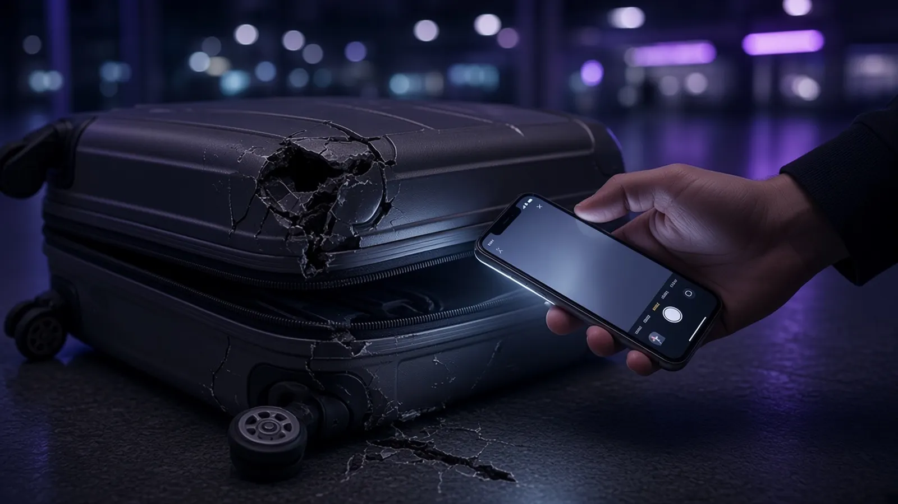

Artigos
Para entender a sua situação com calma.
Textos informativos, em linguagem simples, sobre medida protetiva, família, criminal, direito do passageiro e CAC. Escritos por Lucas Brito Ladeia, advogado, OAB/MA 16.091.
Medida protetiva13 artigos
 Medida protetiva
Medida protetivaExiste audiência para discutir uma medida protetiva? O que acontece nela?
A medida pode ser concedida sem audiência. Veja quando o juiz costuma ouvir as partes, a audiência de retratação da representação, como se preparar e por que não é preciso esperar audiência para se manifestar.
 Medida protetiva
Medida protetivaO que acontece se a pessoa que pediu a medida desistir? Dá para retirar na delegacia?
Só o juiz revoga a medida protetiva. Entenda a diferença entre a medida e o processo criminal, a retratação da representação, por que a reconciliação não encerra a medida e o que nunca fazer.
 Medida protetiva
Medida protetivaComo preservar conversas, áudios e arquivos e documentar ameaças sem comprometer a autenticidade?
Guardar o original e o contexto faz diferença. Veja como exportar conversas, manter arquivos intactos, registrar episódios com datas, guardar cópias em lugar seguro e o que nunca fazer.
 Medida protetiva
Medida protetivaComo contestar uma medida protetiva? Existe prazo para apresentar minha defesa?
A Lei Maria da Penha não fixa um prazo próprio: vale o que está na sua decisão. Como contar o prazo, a diferença entre manifestação e recurso e o que uma defesa costuma conter.
 Medida protetiva
Medida protetivaFui ameaçada hoje: como pedir uma medida protetiva e em quanto tempo o juiz decide?
Onde pedir, sem advogado e sem boletim de ocorrência como condição, o que levar, o que pode ser pedido e os prazos de 48 horas previstos na Lei Maria da Penha.
 Medida protetiva
Medida protetivaPosso apresentar provas depois que a medida protetiva já foi concedida?
Sim: a defesa vem depois da decisão urgente. Que provas costumam ajudar, o que pode contaminá-las e por que a demora pesa, mesmo sem tirar o direito de provar.
 Medida protetiva
Medida protetivaEle descumpriu a medida protetiva: e agora?
Do ponto de vista de quem pediu a proteção: o que conta como descumprimento, como registrar sem perder a prova e o que o juiz pode determinar, da ampliação das medidas à monitoração eletrônica.
 Medida protetiva
Medida protetivaComo pedir a revogação ou a revisão de uma medida protetiva? O que precisa ser demonstrado?
A medida vale enquanto houver risco. O pedido de revogação ou de ajuste parcial gira em torno disso: o que mudou, como provar e o que nunca fazer enquanto o juiz não decide.
 Medida protetiva
Medida protetivaDescumpri a medida protetiva. E agora?
O que diz o art. 24-A da Lei Maria da Penha, o que acontece quando a própria pessoa protegida procura o contato e quais cuidados práticos fazem diferença depois de um descumprimento.
 Medida protetiva
Medida protetivaRecebi uma medida protetiva. Respostas às dúvidas das primeiras 48 horas
Contato, armas, descumprimento, filhos, prazo e antecedentes: as perguntas de quem acabou de ser intimado.
 Medida protetiva
Medida protetivaPosso ver meu filho com medida protetiva?
Quando a medida protetiva alcança os filhos, o que acontece com a convivência e a guarda, e como pedir ao juiz que regule as visitas.
 Medida protetiva
Medida protetivaMedida protetiva aparece em antecedentes? Atrapalha concurso, emprego ou viagem?
O que a medida protetiva registra, o que aparece numa certidão de antecedentes e como ela pode repercutir em concurso, emprego e viagem.
 Medida protetiva
Medida protetivaTenho medida protetiva e ela chegou no mesmo lugar que eu: e agora?
Chegar primeiro não protege ninguém. O que conta é o que você faz depois de perceber a presença dela.
Família10 artigos
 Família
FamíliaMeu ex ficou com a casa depois da separação. Posso pedir aluguel pelo uso exclusivo?
Quem usa sozinho um imóvel comum pode ter de compensar o outro. Veja quando cabe, o que pesa na análise, como ficam filhos e despesas e os caminhos de acordo, notificação, ação e venda do imóvel.
 Família
FamíliaTerminamos a união estável sem contrato nem documentos. O que acontece com o patrimônio?
União estável não depende de papel. Sem contrato, vale a comunhão parcial. Veja o que caracteriza a união, como provar sem documentos, o que entra na partilha e os caminhos em cartório e na Justiça.
 Família
FamíliaCasei em comunhão parcial de bens. O que efetivamente entra na partilha?
Entra o que foi adquirido durante o casamento, mesmo no nome de um só. Ficam fora bens anteriores, heranças e doações. Veja benfeitorias, dívidas, a data do fim da comunhão e como se preparar.
 Família
FamíliaEle não paga a pensão dos filhos. Como exigir na Justiça?
Sem valor fixado, o caminho é a ação de alimentos. Com decisão ou acordo, pede-se o cumprimento: rito da prisão, penhora, desconto em folha e protesto. Veja também prescrição e o que evitar.
 Família
FamíliaMinha ex-companheira não permite que eu veja meu filho. Como exigir o direito de convivência?
A convivência é um direito da criança. Veja como pedir a regulamentação ou o cumprimento do acordo, o que a lei prevê quando o contato é dificultado e o que evitar para não prejudicar o filho.
 Família
FamíliaAtrasei a pensão: posso ser preso? Em quantos dias?
O atraso da pensão pode levar à prisão civil, mas ela não é automática: depende de execução pelo rito da prisão, de intimação ou citação e do prazo de 3 dias para pagar, provar que pagou ou justificar.
 Família
FamíliaA pensão acaba aos 18 ou aos 21 anos?
A pensão não termina sozinha em nenhuma idade. O que muda na maioridade e qual é o caminho correto para encerrar a obrigação.
 Família
FamíliaGuarda compartilhada: ainda preciso pagar pensão?
Guarda compartilhada não é metade para cada um e não elimina a pensão. Entenda como as despesas do filho se dividem.
 Família
FamíliaSaí de casa por causa de uma medida protetiva. Perco a guarda dos meus filhos ou o meu imóvel?
O afastamento do lar é provisório. Veja o que acontece com o imóvel, a guarda, as visitas e a pensão.
 Família
FamíliaPerdi o emprego e pago pensão. O que fazer?
A obrigação não para sozinha quando o emprego acaba. O caminho é pedir a revisão ao juiz logo e pagar o que for possível enquanto isso.
Criminal10 artigos
 Criminal
CriminalComo recuperar um celular, computador ou documento apreendido em uma investigação?
Objetos apreendidos voltam quando deixam de interessar ao processo. Veja como pedir a restituição, o que não é devolvido, o que acontece com bens que se deterioram e o prazo depois do fim do processo.
 Criminal
CriminalPosso ser preso preventivamente mesmo sem ter sido condenado?
A preventiva não é pena antecipada. Entenda os fundamentos e as hipóteses da lei, a exigência de fatos concretos, as medidas alternativas, a revisão a cada 90 dias e como questionar a prisão.
 Criminal
CriminalRecebi um mandado de busca e apreensão. O que a polícia pode fazer dentro da minha casa?
Com mandado, a polícia pode entrar de dia e apreender o que se relaciona ao fato. Veja o que o mandado deve conter, como a busca deve ser feita, seus direitos durante a diligência e o que evitar.
 Criminal
CriminalA polícia levou meu celular durante uma busca. Pode acessar todas as minhas conversas?
Apreender o aparelho e acessar o conteúdo são coisas diferentes. Entenda a ordem judicial, a perícia e a cadeia de custódia, a questão da senha e o que a defesa pode pedir.
 Criminal
CriminalComo demonstrar que uma conversa de WhatsApp foi apresentada fora de contexto?
Um print mostra só um recorte. Veja como preservar a conversa original, exportar o histórico, usar ata notarial ou perícia e impugnar o trecho de forma específica, sem comprometer a defesa.
 Criminal
CriminalComo consultar um inquérito policial e descobrir o que já existe contra mim?
A defesa tem direito de examinar e copiar os elementos já documentados na investigação. Veja onde o inquérito fica, o que pode ser consultado, o que pode ficar em sigilo e o que fazer depois.
 Criminal
CriminalRecebi uma citação criminal. O que acontece agora e qual é o prazo para a defesa?
A citação chama a pessoa acusada a se defender em um processo que já começou. Entenda a diferença para a intimação, o prazo de 10 dias da resposta à acusação e o que vem depois.
 Criminal
CriminalFui intimado da medida protetiva e mandei mensagem. E agora?
Uma mensagem sem ameaça, enviada depois da intimação, pode configurar o crime do art. 24-A da Lei Maria da Penha. Entenda o que a lei diz e o que fazer.
 Criminal
CriminalFui intimado para depor na delegacia. Sou obrigado a ir e posso ficar calado?
Testemunha ou investigado: o que muda, quando é possível ficar em silêncio e por que ir com advogado.
 Criminal
CriminalFui acusado falsamente: o que fazer antes de depor
Direito ao silêncio, acesso aos autos, preservação de provas e o que não fazer com quem acusou, antes do depoimento na delegacia.
Passageiro18 artigos
- Passageiro
Sou médico e perdi o voo e um compromisso financeiro: posso ser ressarcido?
Plantão, cirurgia ou agenda perdidos por falha da companhia aérea: o que pode ser pedido, como provar a renda e o que fazer ainda no aeroporto.
 Passageiro
PassageiroFui impedido de embarcar por overbooking: quais são os meus direitos?
Preterição de embarque: compensação imediata em DES, voluntários, reacomodação, reembolso, assistência e o que fazer no portão.
- Passageiro
Como pedir o reembolso da passagem aérea e em quanto tempo o dinheiro deve voltar?
Reembolso integral ou com multa, prazo de 7 dias, crédito só com concordância e taxas que sempre voltam, segundo a Resolução ANAC 400.
- Passageiro
A companhia aérea mudou o horário do meu voo: posso remarcar ou pedir reembolso?
Alteração programada de voo: aviso de 72 horas, mudanças acima de 30 minutos ou 1 hora e a escolha entre reacomodação e reembolso integral.
- Passageiro
Minha mala não chegou: quanto tempo a companhia tem para devolver e o que posso cobrar enquanto espero?
Prazos de 7 e 21 dias, despesas emergenciais fora de casa, indenização se a mala não aparecer e protesto no voo internacional.

PassageiroAbri a mala em casa e estava quebrada ou faltavam objetos: ainda dá para reclamar?
Dano ou furto percebido após sair do aeroporto: protesto escrito em 7 dias, provas do conteúdo, item frágil e o que a companhia deve fazer.
 Passageiro
PassageiroQuais são os direitos do passageiro quando o voo atrasa ou é cancelado?
Guia rápido da Resolução ANAC 400 com as mudanças de 2026: alimentação após 2 horas, hotel após 4 horas, reacomodação e reembolso.
- Passageiro
Atraso ou cancelamento de voo dá direito a indenização por danos morais?
O dano moral em voo não é presumido: o que diz o art. 251-A do CBA, o que o STJ considera e como reunir provas desde o aeroporto.
 Passageiro
PassageiroPassageiro com deficiência ou mobilidade reduzida: quais são os direitos no aeroporto e no avião?
Resolução ANAC 280: prazos de aviso, acompanhante, recusa de embarque, cadeira de rodas extraviada e atendimento prioritário.
 Passageiro
PassageiroCriança ou adolescente pode viajar de avião sem os pais? Que autorização é exigida?
ECA e Resoluções CNJ 295/2019 e 131/2011: quando a autorização é exigida, viagem nacional e internacional e documentos para o embarque.
 Passageiro
PassageiroVoo internacional atrasado, cancelado ou com mala extraviada: vale o Código do Consumidor ou a Convenção de Montreal?
Temas 210 e 1.240 do STF: dano material pela Convenção de Montreal, dano moral pelo CDC, limites em DES e prazos de protesto.
 Passageiro
PassageiroComo reclamar da companhia aérea na ANAC e no consumidor.gov.br?
Passo a passo: atendimento da companhia, plataforma Anac Passageiro, consumidor.gov.br e Procon, com prazos e o que incluir.
 Passageiro
PassageiroQual é o prazo para reclamar ou processar a companhia aérea?
Prazos de protesto de bagagem (7 e 21 dias) e prazos para a ação: 5 anos pelo CDC e 2 anos pela Convenção de Montreal no dano material.
- Passageiro
Perdi a conexão porque o primeiro voo atrasou: quais são os meus direitos?
Conexão perdida por causa da companhia: reacomodação até em outra empresa, reembolso com volta à origem e assistência material.
- Passageiro
Comprei a passagem e desisti: posso cancelar em 24 horas sem multa?
Regra das 24 horas da ANAC, compra com 7 dias de antecedência, multa limitada, no-show na ida e correção de nome sem ônus.
 Passageiro
PassageiroMeu voo foi cancelado. Quais são meus direitos?
Reacomodação, reembolso, alimentação, hotel e overbooking: o que as regras da ANAC em vigor garantem a quem teve o voo cancelado e o que fazer no aeroporto.
 Passageiro
PassageiroVoo atrasado ou cancelado me fez perder um compromisso de trabalho. Posso pedir indenização pelo que deixei de ganhar?
Lucros cessantes e perda de uma chance: o que diferencia as duas indenizações, que provas reunir e qual é o prazo em voos nacionais e internacionais.
- Passageiro
Minha mala não chegou ou chegou danificada. O que fazer ainda no aeroporto?
O que registrar antes de sair do aeroporto, os prazos que valem no voo nacional e no internacional e o que a lei diz sobre a indenização.
CAC2 artigos
 CAC
CACSou CAC e virei investigado ou réu. Perco meu CR e minhas armas?
Inquérito e processo não cancelam o CR sozinhos, mas podem levar a suspensão cautelar e cassação na PF. O que dizem o Estatuto, o Decreto 11.615/2023 e a IN DG/PF 311/2025.
 CAC
CACSou CAC, tenho porte ou registro e recebi uma medida protetiva. O que acontece com minhas armas e com meu CR?
Suspensão da posse, apreensão do acervo, cassação do CR e restituição: o que dizem a Lei Maria da Penha, o Decreto 11.615/2023 e a IN DG/PF 311/2025.
Acervo
A lista não carregou agora.
Os artigos continuam disponíveis pelas áreas abaixo. Atualize a página ou escolha uma área para continuar.